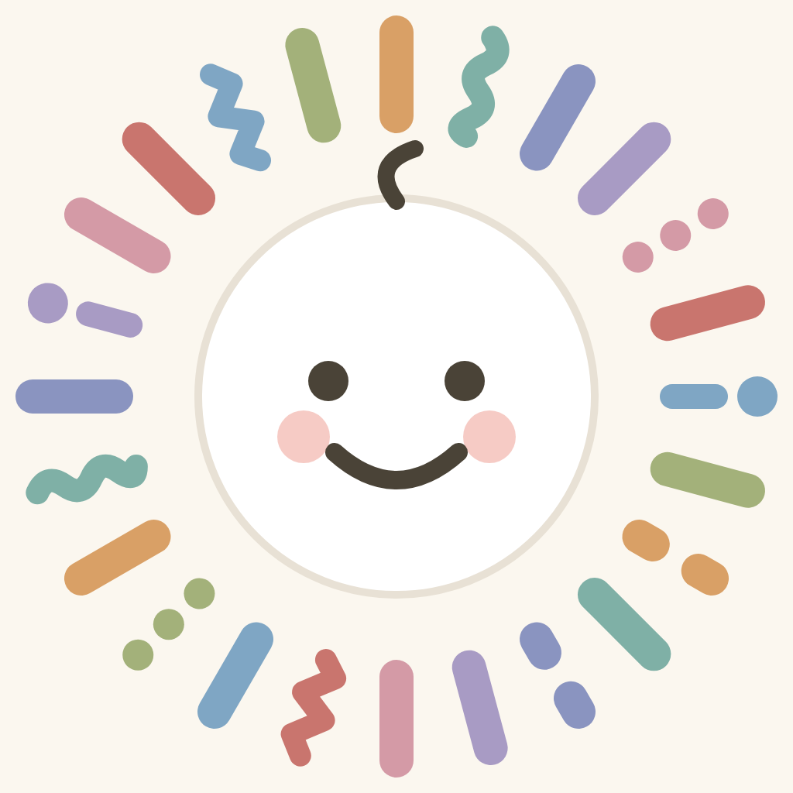
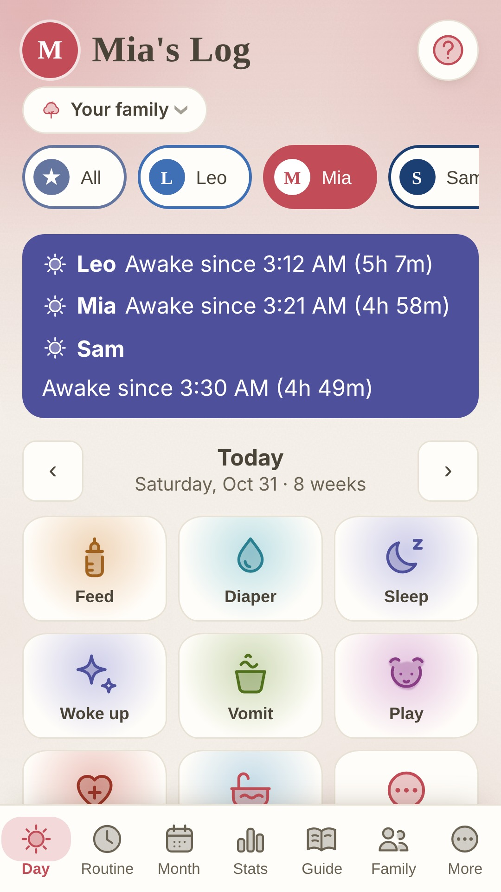
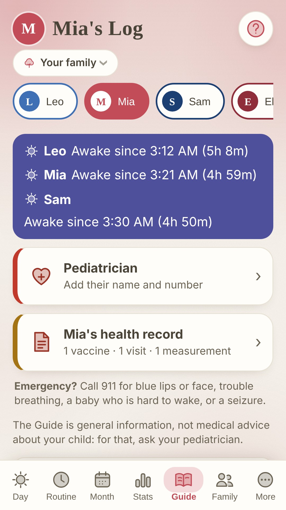

Little Log
Your child's days, logged by the whole family. Encrypted, in your own cloud.
The day as a clock. Feeds, sleep, nappies, play, baths and medicines go around a clock of the day, so you see at a glance when the last feed was and how long the nap has run. Big buttons for busy moments: a tap, a rough time, done.
The whole family, one log. Parents, grandparents, a babysitter, the daycare: each gets a role and sees what that role may see, and health notes stay with the people you choose.
Your own cloud, encrypted. There is no account with us and no server of ours. The log lives on your phones and, if you choose, in a folder in your own Dropbox, Google Drive or iCloud Drive, encrypted on your phone before it leaves it.
Grows with the child. The Day page, the Guide and the entries follow the child's age, from newborn to teenager, in 32 languages.


Coming to Google Play and the App Store. Until then, write to support@crowmade.app to hear when it is out.
Little Log gives general information from the NHS, the AAP, the CDC and the WHO. It is not medical advice: for your child, ask your pediatrician, and in an emergency call your local emergency number. Privacy policy.